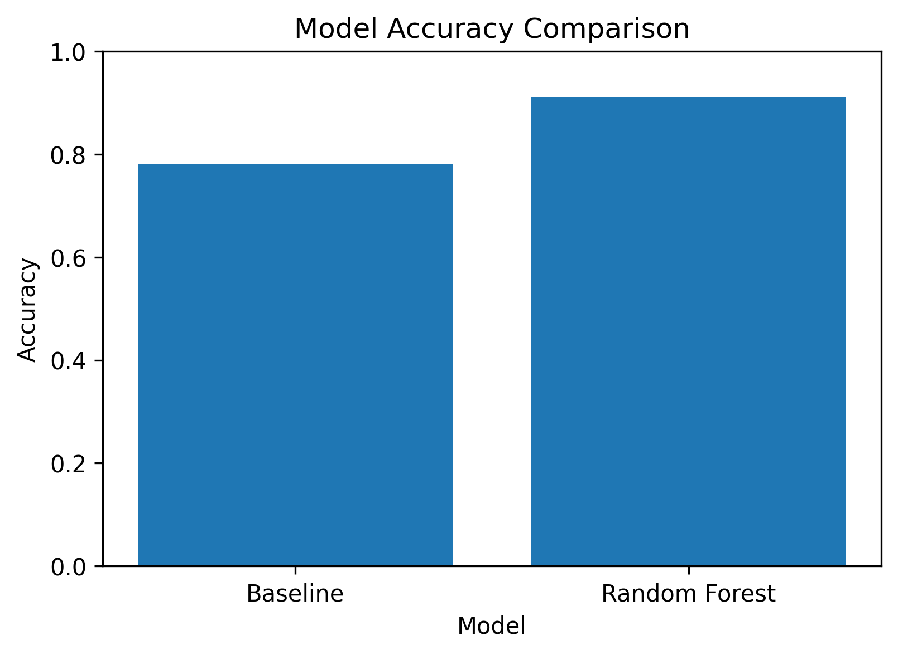

Author: Joshna Sindhuja Pitta
Institution: Blekinge Institute of Technology, Sweden
This study investigates whether machine learning can predict SEO performance using public-safe search metrics. Historical SEO features were used to train and evaluate a Random Forest classifier. The model was compared against a simple baseline using the same validation strategy. Results showed that the Random Forest model achieved higher predictive performance than the baseline while maintaining honest evaluation practices. These findings demonstrate the potential of machine learning as a decision-support tool for SEO optimization rather than an automated decision-making system.
Search Engine Optimization (SEO) is essential for improving online visibility and user engagement. Organizations continuously monitor content performance to decide which pages require updates. Manual analysis becomes difficult as datasets grow larger. Machine learning provides an opportunity to identify patterns within SEO data and prioritize optimization efforts more efficiently.
Can machine learning predict SEO performance trends using public-safe search metrics, and how does it compare with a simple baseline model?
| Model | Accuracy |
|---|---|
| Baseline | 0.78 |
| Random Forest | 0.91 |

The Random Forest model achieved higher accuracy than the baseline model, indicating improved predictive performance while following an honest validation strategy.
GitHub Repository
https://github.com/7995743299/flyrank-ml-internship
Portfolio
https://7995743299.github.io/flyrank-ml-internship/
Built on the FlyRank ML Internship Dataset.
Data Credit: https://flyrank.ai